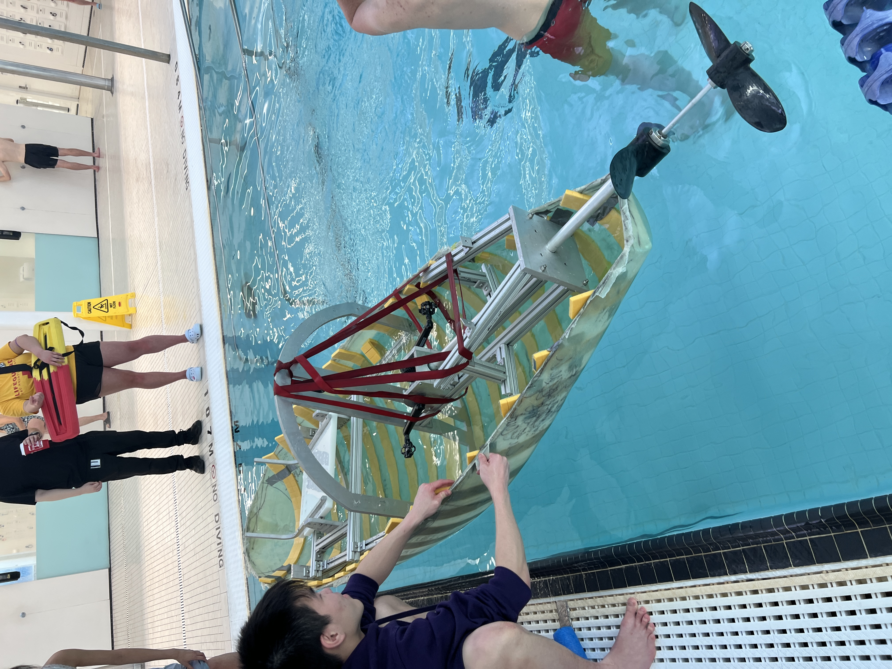
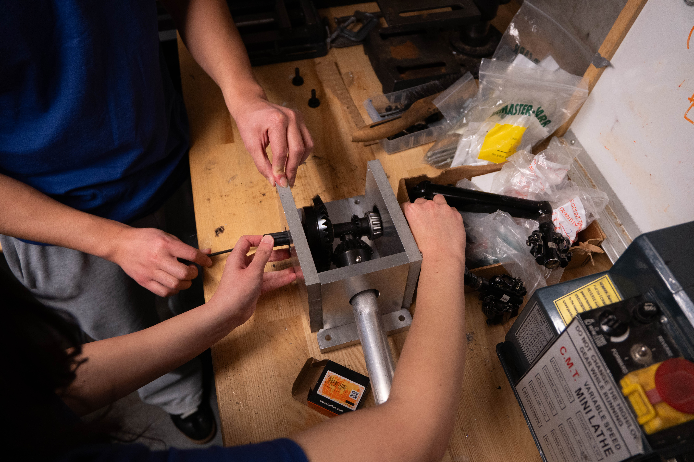

Gearbox Step-Down Collar
The driving pinion in our submarine gearbox kept slipping on its shaft and drifting out of alignment. I designed and machined the collar that fixed it.



Overview
What it is
- The driving pinion was slipping on its shaft and drifting out of alignment, so the gearbox lost power at exactly the moment the pilot was pushing hardest.
- The shaft steps from 0.500 in down to 0.375 in, and that joint is where the problem lived.
- I designed a step-down collar in SolidWorks to locate the pinion and clamp it properly, sized around our gearbox and around what we could actually cut in-house.
- I machined it myself and made the drawings, so the fits were unambiguous and the part came off the machine ready to install.
- The result: no more slippage, and alignment restored. A small part, but the one that decided whether the pedalling actually reached the propeller.
- The gearbox enclosure it sits inside is a separate project.